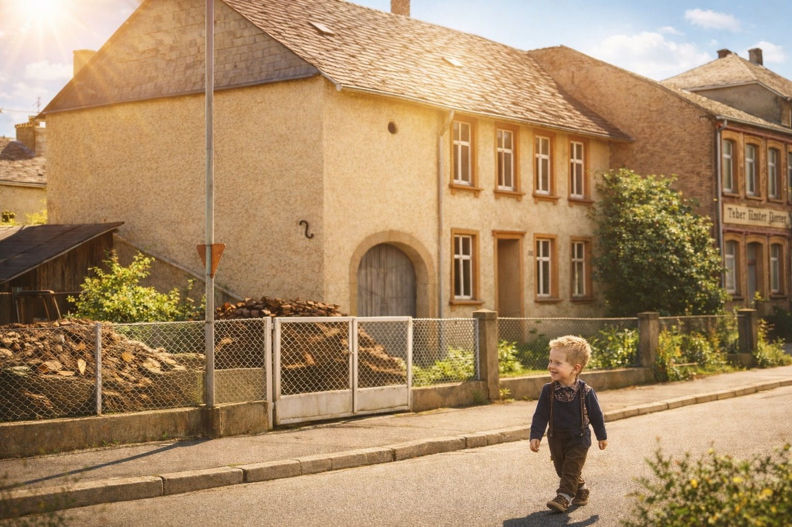
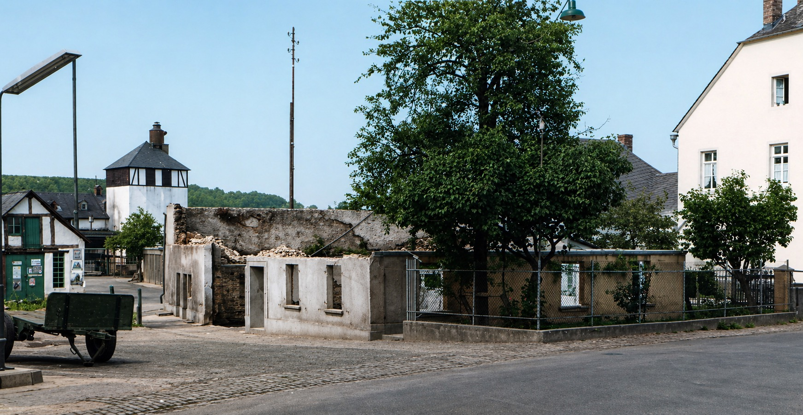

Memoiren, Erinnerungen und Lebensgeschichten.
Mit der Kreidler zum Frühschoppen nach Wenigerath
späte 1950er Jahre

Manche Eindrücke der frühen Kindheit begleiten einen lebenslang. Oft sind es nur flüchtige Momente – manchmal Augenblicke, die für immer haften bleiben. So habe ich immer noch lebhaft in Erinnerung einen Ausflug mit meinem Vater.
Es muss in den späten 1950ern gewesen sein. Wir hatten noch kein Auto – so wie viele im Dorf. Aber mein Vater hatte bereits die Kreidler Florett. Immerhin. Man war einigermaßen mobil.
Sonntags nach dem Hochamt in der St. Anna-Kirche gingen die Männer regelmäßig zum Frühschoppen. Man traf sich, trank etwas und tauschte Neuigkeiten aus, die sich während der Woche zugetragen hatten. Die Mütter blieben zuhause und bereiteten das Mittagessen vor. Überall im Dorf roch man bereits den Sonntagsbraten. Meist blieben die Kinder bei den Müttern und vertrieben sich die Zeit mit Spielen.
Doch an diesem einen Sonntag im Frühling durfte ich mit meinem Vater zum Frühschoppen fahren – hinter ihm auf der Kreidler. Es ging nach Wenigerath, doch nicht über die bereits bestehende Hunsrückhöhenstraße. Ich denke, dieser Weg erschien ihm wegen des Verkehrs mit einem Fünfjährigen hinter sich etwas zu gefährlich.
So fuhren wir gemütlich über die Bischofsdrohner Straße vorbei an der Dreschmaschine, dem Schwimmbad und dem Sägewerk hinein nach Bischofsdhron. Dort nahmen wir dann die Abzweigung links nach Wenigerath zum Gasthof Gemmel.
Die Fahrt war eigentlich aus heutiger Sicht banal. Für mich als Fünfjähriger aber etwas ganz Besonderes. Ich saß hinter meinem Vater, hielt mich fest mit beiden Armen, rückte dicht an ihn heran und legte meine Wangen an seinen starken Rücken.
Der warme Maiwind strich mir durch die Locken, und die Frühlingslandschaft zog an uns vorbei. Der Klang des Mopeds wurde gleichmäßig und vertraut. Ich war geborgen.
Von Locken und richtigen Jungen
1957


In Großfamilien ist es oft so: Die Erstgeborenen erhalten zunächst viel Aufmerksamkeit. Wenn sie älter werden und weiterer Nachwuchs kommt, verteilt sich diese Aufmerksamkeit auf mehrere Kinder. Gleichzeitig wächst für die Älteren die Verantwortung. Das hat seine Nachteile, aber auch Vorteile. Die Jüngeren sind für sie gewissermaßen das, was für andere ihre Spielpuppen sind – nur dass sie lebendiger und interessanter sind.
Ich war von sechs Geschwistern das zweitjüngste und der jüngste Junge. Meine beiden älteren Schwestern kümmerten sich liebevoll um mich – fast als wäre ich ihr eigenes Kind. Besonders mochten sie meinen blonden Lockenkopf. Für sie war ich ihr kleiner Engel.
Mir konnte das recht sein. Ich genoss ihre Aufmerksamkeit. Doch als ich auf die Vier zuging und mich bewusster im Spiegel betrachtete, änderte sich das. Ich fand, ich sah nicht wirklich gut aus. Mit meinen Locken glich ich eher einem Mädchen. Aber ich wollte aussehen wie ein Junge! Ich hatte mich entschieden: Die Locken müssen weg.
Meine Eltern fragten, wie ich mir das denn vorstellte.
„Ich gehe zum Friseur“, sagte ich.
„Und zu welchem?“
„Zum Eibes.“
Sie gaben mir ein paar Groschen und ließen mich gehen. Meine Schwestern waren entsetzt.
Ich machte mich auf den Weg – von der Bernkasteler Straße über den Unteren Markt bis zur Bahnhofstraße. Beim Friseur Eibes bekam ich einen „Männerschnitt“. Als ich den Stuhl verließ und mich im Spiegel sah, war ich zufrieden. So wollte ich aussehen! Ich war stolz wie Oskar und flitzte so schnell ich konnte nach Hause.
Schon von weitem sah ich meine beiden Schwestern am Fenster stehen. Je näher ich kam, desto deutlicher wurden ihre Gesichter. Zunächst waren sie nur erstaunt. Doch dann erkannte ich mehr und mehr Entsetzen und Schmerz: Ihr blonder Engel war verschwunden. Jetzt stand da ein ganz gewöhnlicher Junge.
Mir war das egal. Für mich begann nun das Leben als Mann ...

Hausbrand in der Nachbarschaft
Es wird im Jahr 1957 gewesen sein. Damals ereignete sich etwas, das sich mir tief eingeprägt hat.
Die Nacht war hereingebrochen und wir Kinder schliefen bereits fest. Plötzlich heulten die Sirenen
im ganzen Dorf. Nach meiner Erinnerung gab es damals keine Feuerwehrübungen – und schon gar keine
nächtlichen. Es musste also etwas Außergewöhnliches, Bedrohliches geschehen sein.
Bald waren wir selbst Teil dieses Geschehens. Das Bauernhaus der Familie Weyand brannte lichterloh.
Zwischen ihrem Haus und unserem lag lediglich das Anwesen der Familie Kramp, mit dem wir Wand an Wand
lebten. Und dieses wiederum befand sich in kaum mehr als zwei Metern Entfernung vom Brandherd.
Wir waren bedrückt. Denn wenn das Feuer weiter um sich griff, würde zuerst das Haus Kramp und dann
unseres in Flammen aufgehen.
Meine Eltern reagierten in einer Weise, die heute fast hilflos wirkt. Meine Mutter stürmte auf den
Dachboden und begann, in einer Mischung aus Entschlossenheit und Verwirrung alte Matratzen aus dem
Fenster zu werfen – als ließe sich dem Feuer so etwas entgegensetzen. Mein Vater ging hinaus zum
Brandherd, um sich ein Bild von der Lage zu machen. Wir Kinder mussten im Haus bleiben und warten.
Meine beiden Brüder waren ebenfalls draußen, sodass ich mit meinen Schwestern allein zurückblieb.
Ich war vier Jahre alt, meine Schwestern elf und sechzehn. Wir saßen im Wohnzimmer, klammerten uns
aneinander und versuchten, uns gegenseitig Trost zu spenden. Durch die Fenster drang das flackernde
Licht des Brandes. Wir hörten das dumpfe Geräusch der Feuerwehrpumpen und die besorgten Rufe der
Nachbarn und Helfer.
Obwohl wir uns in einiger Entfernung befanden, war es in unserem Wohnzimmer glühend heiß.
Die Zeit schien stillzustehen. Ich konnte nichts tun und wagte kaum zu atmen. All diese Eindrücke
verdichteten sich zu einem Gefühl von Grauen, Ausgeliefertsein und existenzieller Bedrohung.
Noch heute überkommt mich ein seltsames Gefühl, wenn ich mich in diese Situation zurückversetze.
Die Feuerwehrleute aus Morbach setzten alles daran, ein Übergreifen der Flammen zu verhindern.
Schließlich gelang es ihnen, die dem Brand zugewandte Wand des Hauses Kramp so stark zu bewässern,
dass sie standhielt. Die Nacht mit all der Ungewissheit zog sich bis in den Morgen hinein.
Das Haus Weyand brannte bis auf die Grundmauern nieder. Das Haus Kramp trug sichtbare Spuren davon,
blieb aber bestehen – ebenso wie unseres.
Was bis heute bleibt, ist die Erinnerung an diese Stunden, in denen nicht klar war,
ob unser Zuhause erhalten bleiben würde oder nicht.
Das Bild zeigt das abgebrannte Haus Weyand. Rechts davon das Haus Kramp.
Unser Haus lag weiter rechts außerhalb des Bildes. Im Hintergrund ist die Gerberei zu sehen,
die später ebenfalls abbrannte.
Ein früher Moment
ca. 1975
Ich erinnere mich an einen stillen Nachmittag.
Es war eine Zeit, in der vieles noch einfach war.
ca. 1985
Hier beginnt ein neuer Abschnitt meines Lebens.
Die Welt wurde größer und unübersichtlicher.
Mein Weg
–
Hier kannst du deinen beruflichen Weg beschreiben.
Was dich geprägt hat und was geblieben ist.
Menschen, die wichtig waren
–
Hier geht es um Nähe, Beziehungen und Abschiede.
Um das, was trägt – und das, was fehlt.
Wie alles begann
–
Irgendwann wurden Gedanken zu Worten – und Worte zu Liedern.
Es war kein Plan, sondern ein Bedürfnis.
Ein Blick zurück
heute
Wenn ich zurückblicke, sehe ich viele Wege.
Nicht alles ist geblieben – aber manches trägt bis heute.